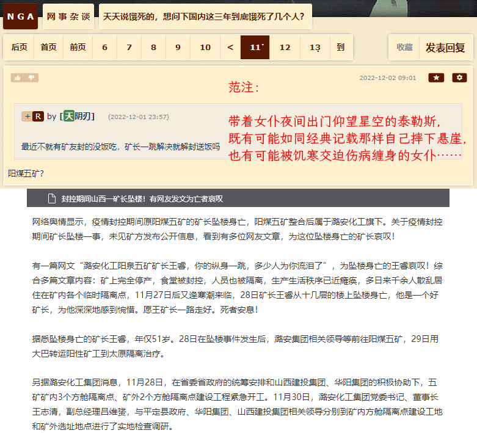
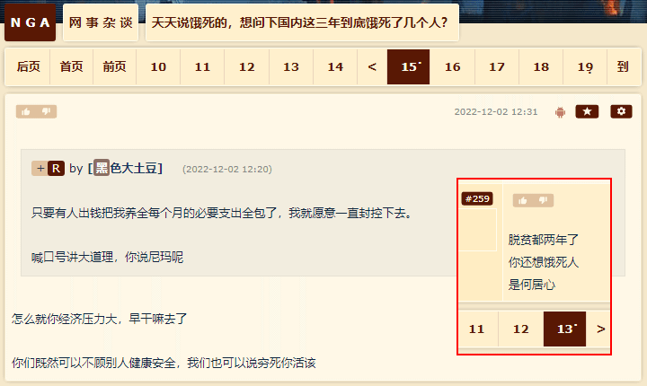
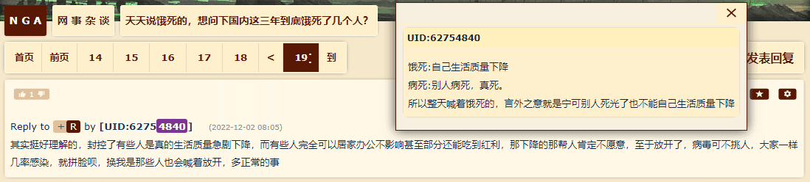
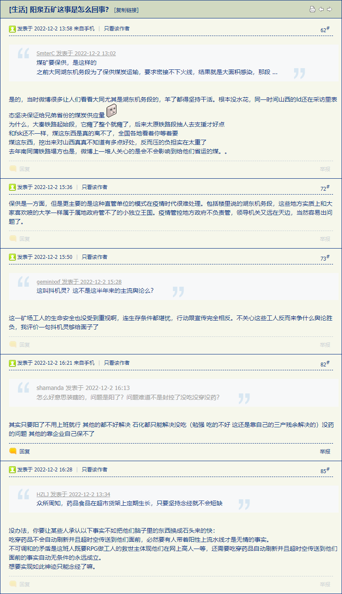
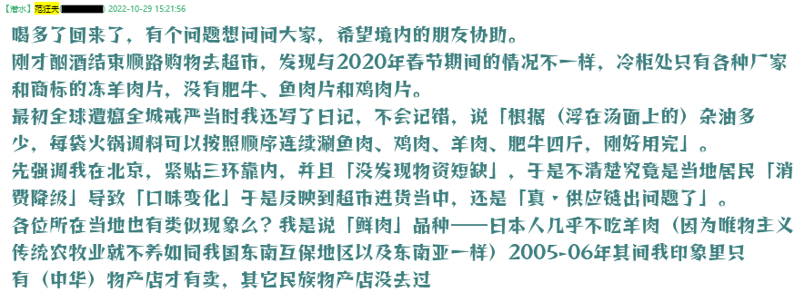

fanhan-inside
备份情报兼素材：
范某截图备份于此

前情提要段子：
范某摘抄备份于此
1993年，俄总理切尔诺梅尔金、海军总司令格罗莫夫在时任乌克兰总理库奇马的陪同下来到黑海造船厂，探讨把"瓦良格"号建造完毕并移交给俄海军的可能性时。正在大家因为价格争论不休时，陪同的原黑海造船厂厂长马卡洛夫说道“这艘航母已经不可能完工了……”，听到马卡洛夫的话后。在场的人大家问道：“如果要让这艘航母完工，工厂需要什么？”
马卡洛夫回答道：“大官人，你听我说，但凡造船的两个字最难，要五件事俱全，方才行得。第一件，苏联，第二件，党中央，第三件，国家计划委员会，第四件，军事工业委员会和九个国防工业部，第五件，600个相关专业、8000家配套厂家。总之需要一个伟大的国家才能完成它。"
时任……插口道：“实不瞒你说，这五件事，我都有些。第一，我的面儿虽比不得苏联，也充得过。第二，我小时也曾养得偌大一个党。第三，我家里也有发改委。虽已经不再是计委，也颇得过。第四，我那国防科工委最臃肿。他便喷我设立四百个工业部，休想我裁掉他一个司。第五，我那体制内的包衣阿哈当中最有闲人。不然，如何走街串巷与江湖好汉草莽豪杰地痞流氓泼皮无赖勾肩搭背称兄道弟来的恁频。老马，你只作成我完备了时，我自重重的谢你。”
众所周知如今罗刹的制造业（不仅仅局限于军事工业）窘境开始于苏联解体，遍布十五个加盟共和国的供应链几乎完全瓦解，仅凭「老关系」才能维持住关键的几条，其它只能放弃……从此再无自主进步的可能。
前几篇日志当中引用的情报兼素材已经提到了有识之士对于「三年自然灾害v2.0」时期各地以邻为壑⸺疫情爆发后第一条边境冲突新闻就是河南安阳民间自发挖堑壕堆路障阻挠湖北方向交通⸺的评价，比前苏联十五个共和国之间撕哔还要热闹，接近这次鹅螺狮与乌克兰你死我活了……那么撕破脸皮之后哪怕是「民间项目」还有合作的可能么？
即便没撕破脸皮，根据经济新闻以及相关从业者提供的第一手材料也能判断出实际情况。比方说「离境检核酸」「落地检核酸」「隔离若干天」「厂内每天一检有异常就拉闸停工」……还有社会新闻「（民间）伪造绿码」「（官方）维稳红码」……到最后甲方乙方都精疲力尽，好聚好散了。
先例可以参考日本神户地震前后关西供应链的变化，被「不可抗力」强行打断的合作关系各方在「三年困难时期」当中为了活下去而各自找下家之后，即便唯物主义条件恢复原状也很难再复合了。
当然，嘴硬的说「寰球同此凉热」，那是前两年，权威新闻报道欧美哀嚎供应链的时候。今年以来国境外纷纷躺平，境内反而变本加厉层层加码最高到「一天两检」，对社会的影响显而易见。即便战略项目还有「中央」牵头协调各方一路绿灯码，估计也就到「八千个配套厂家」层次，而其上下游供应链都顾不上，没准立项时预计的供应商等到开工时已经不存在了呢。
哪怕就从官方新闻当中提取大数据分析捅妓上的相关性，除了核酸试剂及其供应链之外，这些年居然没有其它产业升级。就用根红苗正忠君爱国童年才俊嘴里的「反汉贱种中国通日杂胎毒殖人耗材」（并且如今手头的两个户口本加起来只剩一页）的典型言论形容：舌尖上的中国制造，这次就是字面意思。
fanhan-inside
补充情报兼素材：
范某截图备份于此

若是城市水泥森林当中「小布尔乔亚」饿死多少，想必满口「反汉贱种中国通日杂胎毒殖人耗材」的根红苗正忠君爱国童年才俊不在乎，顺便还能嘲笑「四体不勤五谷不分」几句。所以不需要备份那些口水战，专挑「咱们工人有力量」类型的新闻就行了。
长话短说，根红苗正忠君爱国童年才俊挂在嘴边「指数增长」「拉平曲线」之类专业术语，想必有很多人听得似懂非懂，那就举一个尖锐的例子：若是正在加班加点建设方舱隔离点的施工队伍当中出现混检阳性，是不是应该立刻停工并把全体工人接到已经建好的方舱隔离点「5+3」（往少了说）？
想明白这个问题，就知道什么是「正反馈」「肯定之肯定の死亡螺旋上升」了，现在的局面下只要还坚持检测隔离制度，结果就如本篇日志标题所示。
fanhan-inside
补充情报兼素材：
范某截图备份于此



长话短说，这是「可萨汗国在分裂」的迹象：居家办公的白可萨拨拉着算盘发球难财，负责挤奶屠宰取水烧火把屎把尿乃至于暴风雪中以八百里加急ping值到处送信的黑可萨都挤在牛棚马厩的隔离间里裹着稻草饥寒交迫发高烧，还要继续做工。
相关剧情：
卡壳世界・作文
“你这词又用错了”，菲利克斯纠正，“毕竟可萨汗国已经完蛋了，这边可没有”。
“你们白的把脸一抹显出本相卷款跑路拍屁股走人”，斯米尔诺夫大忆昔日之苦大思今日之恨，“我们黑的只能留在当地苟延残喘”。
⸺《范版西幻设定集》之十四〈食不厌精脍不厌细〉
fanhan-inside
最后简单说几句，也是为了给本篇日志加上「《异闻录》」标签，毕竟这才是更贴近现实的影射，还不用查找替换关键字。
就在砥砺奋进这十年刚开始的时候，权威机构还认证过权威媒体对于「断头路」的报道，深入揭批「地方保护主义」，号召要「全国一盘棋」打通「毛细血管」。然后就是自然灾害这三年刚开始的时候，权威媒体报道河南人民那叫一个积极主动，防湖北人民甚于防贼。甭说断头路，正经的公路都能凿得坑坑洼洼，好比集束炸弹破坏机场那样，到处都是堑壕，以及碉堡炮楼。
自打权威机构世界卫生组织认证的自然灾害以来，「一年一个样，三年大变样」，砥砺奋进十年来底线思维忧患意识所预计的「新冷战」甚至热战而准备的「内循环」，已经超额完成任务了，不仅是在国内，还是各个省内。每一个兵家必争之地都一样，权威机构呼吁所有人民群众，非必要不离境，能不出市就不出市，能不出区就不出区，能不出街道就不出街道，能不出家门就不出家门。
于是在「全球化」前提下的「社会化大生产」除了线上能完成的虚拟经济之外，已经退化成作坊甚至手工业个体户了，供应链仅限「信得过」的老关系户，而「信任」还需要权威机构「核酸/抗原检测公司」认证。城市居民可以从超市货架上明显观察出来，比方说10月29日：
囧斋怪奇事件簿

后来再去的时候，看到了冷冻肥牛片，那天应该是刚好卖完，但是鸡肉片（其实不算好吃，没有也可以理解）和鱼肉片还是没有。其它商品以此类推，估计是有「人脉」能随时随地从市外往城区呼呼拉货的物流公司在周边各地的「关系户」只有这些品种。
自从权威机构认证权威媒体报道权威机构鉴定「冷链」当中的所有商品都会带毒建议「消杀」以来，各种边界线两侧就很热闹，好比当年各地在断头路上总有武装人员把隔壁乡镇/县市/省区运送冰棍冷饮的货柜车拦住打开车门晾一天等都化了再放走。
顺便，自从权威媒体开始大肆渲染「物品带毒」之后，有识之士就知道「清零」不可能了，除非权威机构自抽耳光，把吐出来的口水舔回去，把拉出去的屎塞回去。好比炒作「气溶胶传播」那样，从「居家时不穿NASA认证宇航服不戴口罩也会传染」到「其实可能性极小」，都是权威机构的权威人士发言，有权威媒体报道。
而对应的生产关系，就是政体从名义上的「共和国」，演变为「合众国」，眼瞅着就是「苏联」，接下来则是「欧盟」，最后当然是散伙，各省自己牵头与境外上下游供应商通过和平的手段建立联系并保持关系⸺这种行动通常称为「外交」。
fanhan-inside
忘了举例了，不过由于在去年6月23日夜承诺过「今后不对未经权威机构认证的消息作出超出字面含义的解读」，有些脑洞暂时不能展开，这里只提供思路。
就比方说健康码相关吧，经常有社会新闻报道谁或啥由于核酸检测结果不及时之类问题，被武装人员拦在哪外面导致了嘛严重后果，略作展开可以指桑骂槐「现在俄罗斯还封控么？」「卫健委有兵权了？」「军火咋供应不上？」「被保安拦在车站等消杀了」「瓦格纳志愿者的火力比正规军警还猛」……魔幻现实主义白描之下的荒诞效果请读者各自放飞脑洞。
再比方说隔离入室消杀吧，今年才有报道各地破门而入的「志愿者」，把隔离者家中的衣物、被褥乃至冰箱里食物等所有「密切接触者」一律销毁，于是从方舱回来的谁看着家徒四壁的毛坯房……这时响起旁白「虽然你一无所有，但你获得了健康」（「盎视记者叙利亚报道」典故）以及「俄罗斯士兵往家里邮寄冰箱洗衣机彩电游戏机」（「盎视记者推特报道」典故）。
这个我有个人亲身经历的第一手材料作为形象参考，就是回到南里住宅料理后事的时候，看到了一片狼藉，我自己都搬不动的大号家具被拆得七零八落，不可能是七十五岁的家贼干的，加上全套证件及房本和钥匙都不翼而飞，以及居委会和人民警察通知我的时候对此完全无视，一定是有「人脉」的若干彪形大汉上门打砸抢的结果。
有兴趣的读者兼写手，可以搜集大批相关「小作文」，配合权威机构认证的权威媒体报道的各种最高、高级、中级、基层指示精神，保证可以炮制出一部境内禁映/全网查删但是在境外大获好评的划时代大作来，每个细节都有出处，每个镜头都是白描，不需要煽情，并且还不是「阴谋颠覆国家政权」那种造谣。